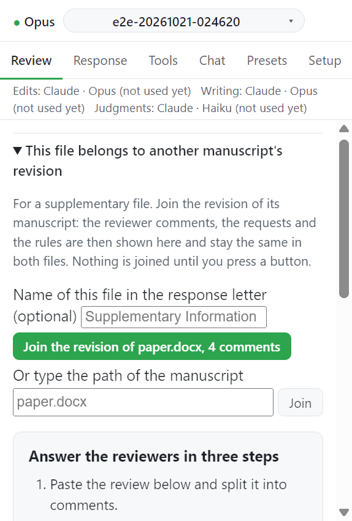

Step 6. Supplementary files¶
보충 자료가 별도 Word 파일이면 그 파일을 원고의 리비전에 묶을 수 있다. 묶은 파일에서도 같은 의견 목록, 요청, 규칙으로 변경을 제안받는다.
입력¶
| 항목 | 값 | 필수 |
|---|---|---|
| 원고 | 같은 폴더의 원고 버튼, 또는 Or type the path of the manuscript 칸의 경로 | 필수 |
| Name of this file in the response letter | 응답서가 이 파일을 부르는 이름. 예: Supplementary Information |
선택. 비우면 확장자를 뺀 파일 이름 |
동작¶
- 보충 Word 파일을 연다. 자체 심사 의견이 없으면 Review 탭에 원고 리비전에 묶는 접힘 상자가 뜬다. 상자 제목은
This file belongs to another로 시작한다. - 같은 폴더에서 심사 의견을 가진 원고마다 버튼이 있다. 예:
Join the revision of paper.docx, 23 comments. - 다른 곳의 원고면 경로를 쓰고 Join 을 누른다.
- 버튼을 누르기 전까지는 아무것도 묶이지 않는다. 한 폴더에 논문이 둘 있을 수 있어서다.

묶은 뒤¶
- 보충 파일은 원고의 의견 목록, 요청, 규칙을 보여 준다. 고치는 곳은 원고뿐이다. 보충 파일은 작업창이 열릴 때마다 복사해 온다.
- 범위가
Supplement인 규칙은 보충 파일에 적용된다. 원고의 단어 수, 절 수 규칙은 적용되지 않는다. - Propose changes, Propose all, Preview prompt 는 원고에서와 같이 동작한다. 턴은 보충 파일만 읽고 고친다. 원고 텍스트는 받지 않는다.
- 한 파일에서 도구 질문에 답한 내용은 다른 파일의 턴에도 전달된다.
- 응답서 이름은 원고 줄의 Name in the response letter 와 Save name 으로 나중에 바꾼다.
- Leave this revision 으로 묶음을 푼다.
다른 파일의 상태¶
각 작업창은 다른 파일에서 요청이 어디까지 왔는지 보여 준다.
| 표시 | 뜻 |
|---|---|
Changed in SI.docx |
그 파일에서 변경을 수락했다 |
Waiting for your decision in SI.docx |
그 파일에서 아직 추적 중이다 |
이 상태는 그 파일의 마지막 상태 갱신이 쓴 값이다. Word 에서 수락하거나 거절한 뒤 그 파일의 작업창이 갱신되게 한다. 포커스를 얻으면 갱신된다.
응답서와 제출 점검¶
응답서는 원고에서 쓴다. 보충 파일의 Response 탭은 이 사실을 알리고 이 파일의 수락한 변경 중 응답서가 인용하는 것과 아직 인용하지 않는 것을 보여 준다. 원고의 "Run checks" 는 어느 파일이든 수락한 변경이 요청을 다루면 답한 것으로 센다.
닫힌 파일은 기록을 확인할 수 있을 때만 믿는다. 마지막 갱신이 저장된 문서에서 이뤄졌고 디스크의 파일 시각과 크기가 그대로여야 한다. 아니면 "Run checks" 가 실패한다.
SI.docx changed since Sidewrite last read it. Open it, save, press Refresh.SI.docx had changes that were not saved when Sidewrite last read it. Open it, save, press Refresh.Sidewrite has not read SI.docx since it joined this revision. Open it, save, press Refresh.
알려진 한계¶
- 보충 파일의 인용문에는 줄 번호가 없다.
- 여러 파일을 합친 marked copy 는 없다.
- 클라우드에만 있는 문서는 묶을 수 없다.
- 묶은 뒤 이름을 바꾼 파일은 다시 찾지 못한다. 묶음을 풀고 다시 묶는다.
- Figures and other files 페이지는 보충 파일 아래에 새 기록을 받지 않는다.
Record this under paper.docx라고 답한다.
다음¶
→ 응답서 개요